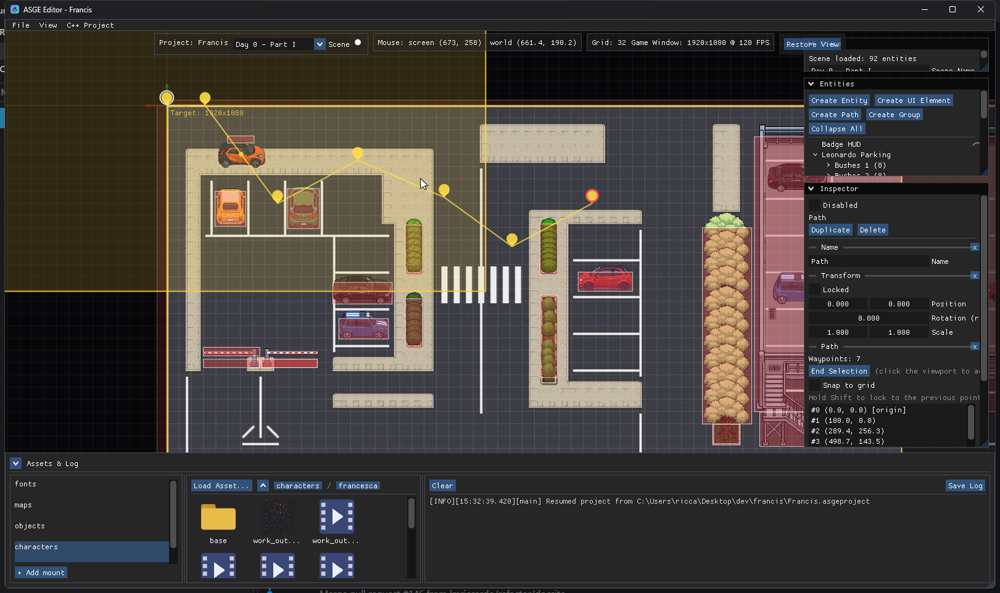
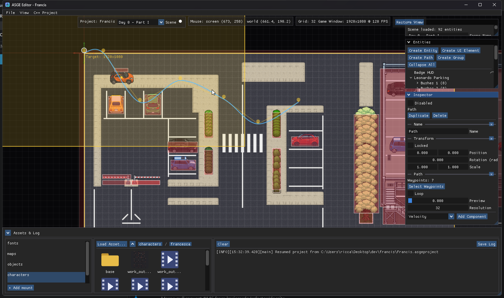

Make an entity follow a path
A route and its follower are two entities: a Path holds the waypoints, and a PathFollow child rides it. Waypoints are placed on the viewport rather than typed as numbers.

Steps
- Click Create Path in the Entities panel. It makes a route entity with two default waypoints.
- Create the mover (for example a sprite entity) and drag its row onto the route in the Entities tree. It snaps to the path start and its progress resets. Add a
PathFollowcomponent if it does not have one. - Select the route and click Select Waypoints in its Path section. The viewport becomes a click-to-place surface.
- Edit the path with the mouse, then click End Selection to commit and leave the mode.
The follower finds its path through its parent, so there are no entity references to wire up. If the parent is missing or has no Path, the PathFollow section shows a warning.
| Input | Effect |
|---|---|
| Click | Append a waypoint at the cursor's world position. |
| Drag a point | Move it (a fixed screen-pixel pick radius, so it is grabbable at any zoom). |
| Right-click a point | Remove it. Waypoint 0 is locked to the route origin and cannot be moved or removed. |
| Shift | Axis-lock: the point snaps to the previous point's X or Y, whichever is closer to the cursor. |
| Snap to grid | Persistent toggle that reuses the world grid spacing. |
| Esc | Discard everything placed this session, restoring what was there before. |
| End Selection | Commit and exit the mode. |
Waypoints can also be selected from a list in the Inspector, and the selected one has a numeric Position field. Points are stored local to the route's Transform, so moving the route moves the whole path.

Waypoints stay visible as pin markers after selection ends. Outside edit mode, a real Catmull-Rom curve, the same interpolation PathFollowingSystem uses at runtime, overlays the straight point-to-point lines, sampled at the Path's own Resolution.
Preview the follower
Selecting a route draws a translucent ghost of every child follower's sprite at the path start and at a Preview slider position, using the sprite's real size, source rect, offsets and tangent rotation, so you can check the visible body against the line. A PathFollow has Speed, an H/V offset from the line, and Align Rotation: turn it off to move along the path without turning the sprite to the tangent.
Previous: Animate a sprite.